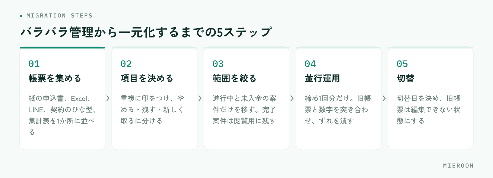

不動産仲介の業務改善ツールを導入して効果が出るかは、機能よりも「何を、どの順番でまとめるか」で決まります。紙の申込書、Excelの管理表、LINEのやり取りに情報が散らばったまま新しいツールを足しても、入力先が1つ増えるだけです。この記事では、バラバラ管理で起きていること、反響→申込→売上の順に一元化する理由、導入から切替までの手順、ツールに任せる部分と人が判断する部分の線引きを解説します。
バラバラ管理で起きている3つのこと
紙・Excel・LINEが混在した店舗では、業務は回っているように見えて、次の問題が静かに進んでいます。
- 同じ情報を何度も入力している。ポータルの反響メールを接客シートに転記し、申込が入れば申込管理表に書き、契約書にもう一度打ち込む。1件の契約で同じ氏名と物件を繰り返し入力している
- 最新がどれか分からない。Excelのコピーが複数あり、LINEで伝えた条件変更が管理表に反映されない。月末に数字が合わず、確認に時間が消える
- 退職と同時に情報が消える。追客の履歴が個人のLINEにあり、管理会社との物確のやり取りが担当者の頭の中にある。引き継ぎのたびに、お客様との関係が最初からになる
これらは担当者の注意不足ではなく、記録する場所が分かれていることが原因です。不動産仲介の業務効率化は、まず記録先を1つにすることから始まります。
まとめる順番は「反響→申込→売上」
一元化には順番があります。売上管理から始めたくなりますが、反響から始める方がうまくいきます。反響は業務の入口で、そこに案件が登録されていれば、接客・申込・契約・入金はその案件に情報を足していくだけで済むからです。

- 反響：ポータルやフォームからの自動取込で入力そのものを減らす。媒体と担当を持たせる
- 申込：申込管理表を1つにし、審査状況・契約予定日・仲介手数料・AD・付帯を案件に紐づける
- 売上：入金の消し込み、一部入金の残額、後ADの入金予定と実績を同じ案件に記録する
この順番なら、どの媒体の反響がいくらの売上になったのかが自動でつながり、広告費の判断まで一気通貫になります。逆に売上だけを先に整えると、反響は別管理のままで、集計のたびに突き合わせが必要になります。月末の集計が重い店舗ほど効果は大きく、詳しくは月末集計に半日。「数字まとめ地獄」から抜け出す方法。で解説しています。
導入の手順①：現状の帳票を集め、項目を決める
不動産の業務改善ツールを導入する最初の作業は、ツールの設定ではなく、いま使っている帳票をすべて集めることです。
- 帳票を集める。紙の申込書、Excelの管理表、LINEグループ、契約書のひな型、月次の集計表を1か所に並べる
- 項目を書き出す。各帳票の列や記入欄を一覧にし、重複している項目に印をつける
- 項目を三つに分ける。入力をやめる項目、残す項目、新しく取る項目。後ADの入金予定日や媒体名など、これまで取っていなかった項目はここで足す
- 用語を揃える。申込・審査中・契約予定など、ステータスの名前と意味を店舗内で統一する
この作業を省いてツールの初期設定に入ると、Excelの列をそのまま再現してしまい、不要な項目が入力の負担として残ります。項目を減らす決断はこの段階でしかできません。
導入の手順②：移行→並行運用→切替
項目が決まったら移行に入ります。原則は、範囲を絞って短く終えることです。
- 移行する範囲を決める。進行中の案件と未入金の案件だけを対象にし、完了した案件は旧帳票を閲覧用に残す
- 担当者ごとに自分の案件を入力する。移行作業がそのまま操作の練習になる
- 並行運用は締め1回分に区切る。旧帳票と新ツールの数字を一度だけ突き合わせ、ずれの原因を潰す
- 切替日を決め、旧帳票を編集できない状態にする。Excelは閲覧のみ、紙の申込書は原本保管のみに変える
- 切替後の最初の締めで、未入力と未入金を店長が確認する
並行運用を長く続けるほど、二重入力の不満が現場にたまり、結局は慣れた方に戻ってしまいます。Excelからの移行で何が変わるかは、Excel管理からの卒業。SaaS導入で変わる5つのこと。で整理しています。
失敗しないための運用ルール
導入後に元へ戻らないためのルールは多くありません。次の五つを店舗で共有します。
- 入口は1つ。ツールに登録されていない案件は、無いものとして扱う
- 入力の担当と期限を決める。反響は受付時、申込は受付時、入金は確認時に、その場で入れる
- 会議はツールの画面で行う。集計資料を別に作らず、未返信・申込中・未入金を画面で見る
- 項目を増やすときは店長が決める。現場が個別に列や欄を足すと集計が合わなくなる
- LINEは連絡、記録はツール。お客様や管理会社とのやり取りの結果は、必ず案件に残す
とくに最後のルールは重要です。LINEは連絡手段としては優れていますが、記録の置き場にすると検索できず、退職で消えます。やり取りの結論だけを案件に転記する習慣がつけば、引き継ぎの問題はほぼ解消します。導入後に元へ戻らない仕組みは賃貸仲介の業務改善ツール｜定着する店舗と失敗する店舗の違い・選び方で詳しく解説しています。
ツールに任せる部分と、人が判断する部分
一元化が進むと、どこまでをツールに任せるかが次の論点になります。線引きは、繰り返しの作業か、判断を伴う仕事かで考えます。
- ツールに任せる：反響の取込、未返信・未入金の抽出、担当別・媒体別の集計、追客の定期配信、契約書類への顧客情報の差し込み、物件情報の各媒体への出力
- 人が判断する：どの物件を提案するか、審査が難しい案件への対応、ADの交渉、広告費をどの媒体に配分するか、スタッフの評価と育成
ツールが集計と抽出を引き受けるほど、人は判断に時間を使えます。どこまで任せられるかは製品によって幅があるので、資料の機能名だけで決めず、実際の画面で自店の案件を一件通してから見比べてください。とくに後ADの入金予定日、一部入金の残額、媒体別の集計は、その欄が画面にあるかどうかで運用がまるごと変わります。
まとめ：不動産仲介の業務改善ツールは「入力を減らす」ことから
バラバラ管理から抜け出す手順は、帳票を集めて項目を決め、反響→申込→売上の順に1つへまとめ、範囲を絞って短く移行する、という流れに尽きます。ツールの導入はその手段であり、目的は同じ情報を何度も入力しない状態をつくることです。どの製品にするかを考える前に、まずいまの帳票を机に並べるところから始めてください。
その一元化を賃貸仲介の流れのまま扱う業務管理SaaSとして、株式会社TENERAMENTE が「ミエルーム」を開発・運用しています。フォームやメールの自動取込で反響の入力を減らし、申込管理表で後ADを案件ごとに記録し、一部入金・分割入金や確定売上と見込みの分離にも対応します。社内契約フォーマットへの自動取込や業者間サイト連携もあり、Excelデータのインポートと初期設定の代行にも対応しています。機能ごとの画面は ミエルームの機能・事例 にまとめています。いま使っている帳票を見せていただければ、どこまで1つにまとめられるかをお伝えできますので、まずはお問い合わせからどうぞ。